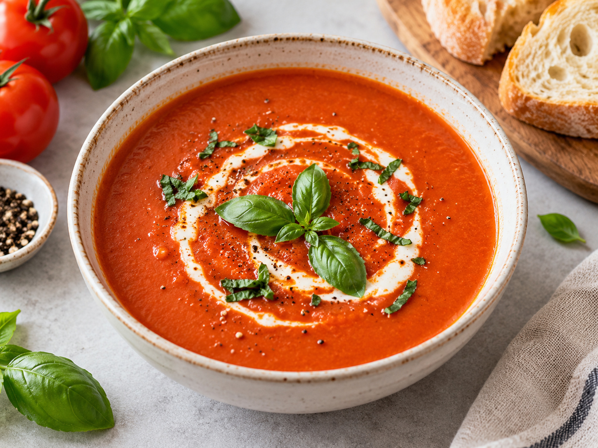
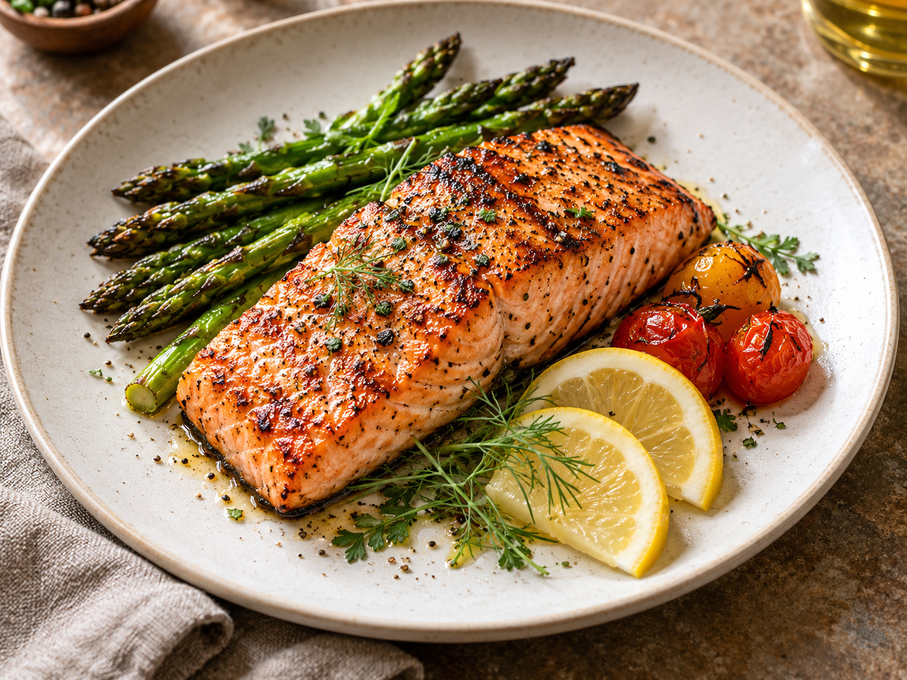
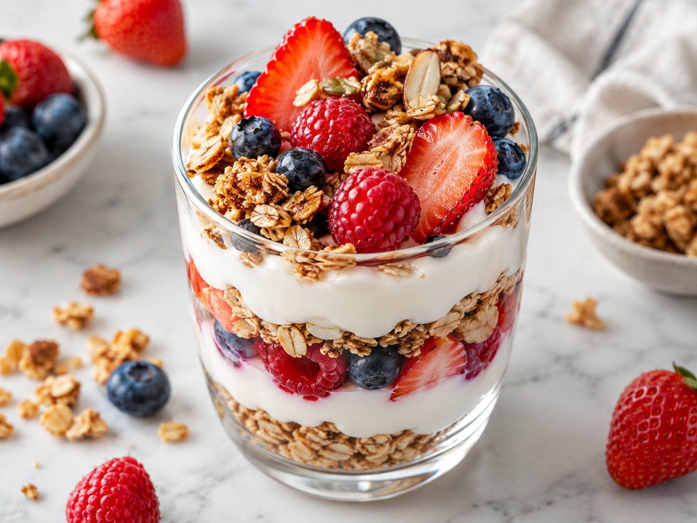

Avocado Toast
Creamy avocado on crisp toast with lemon, herbs, and a simple seasoning mix.
Creamy avocado on crisp toast with lemon, herbs, and a simple seasoning mix.

A classic pizza with tomato, mozzarella, basil, and a crisp homemade-style crust.

Quick chicken and colorful vegetables tossed in a savory stir-fry sauce.

Soft chocolate pancakes with a rich cocoa flavor and an easy breakfast batter.

A light wrap filled with crunchy vegetables, greens, and a simple creamy spread.

A smooth, comforting tomato soup with garlic, herbs, and a simple creamy finish.

Tender salmon with lemon, herbs, and a lightly charred grilled finish.

Layers of yogurt, fresh fruit, and crunchy granola for a light dessert or breakfast.
No recipes matched your search. Try another recipe name.
Saved by you
Tap the heart on any recipe to save it here.
Graduate UI Simulation
Suggestions are a static UI concept. Search and favorites are local browser interactions.